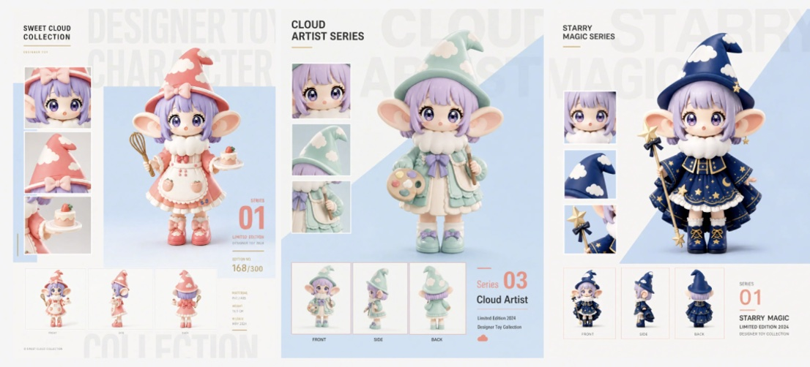
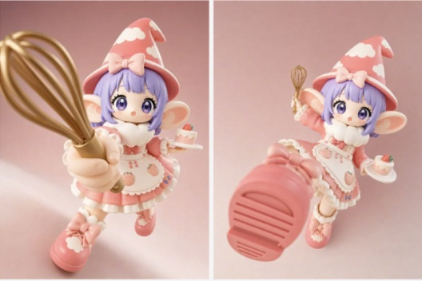
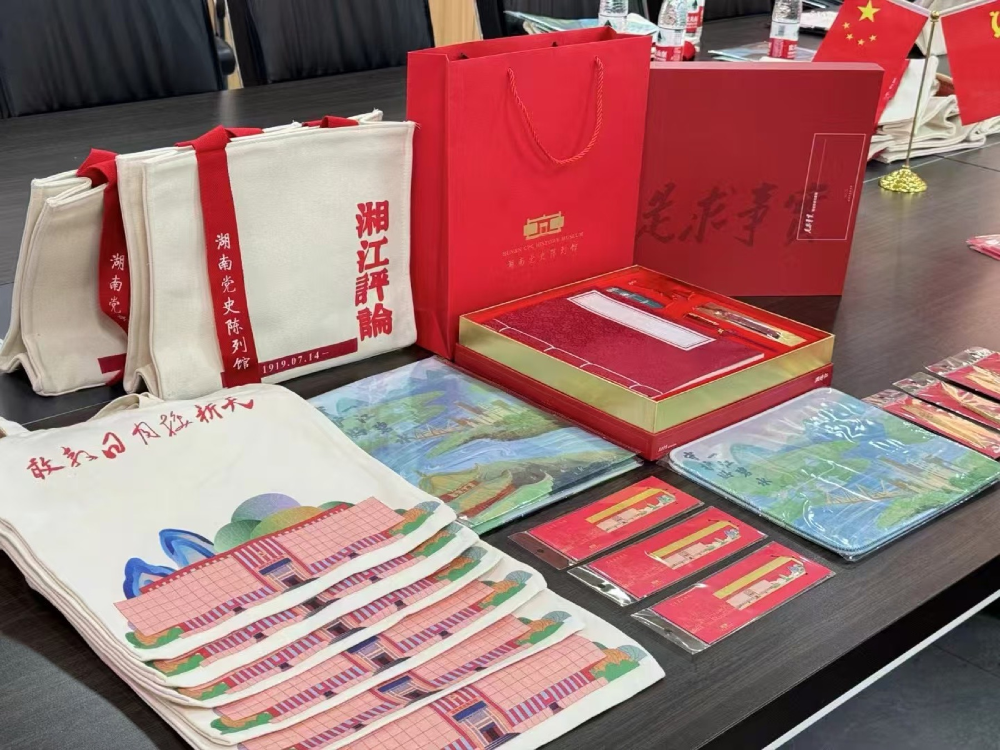

Visual Design
Visual Design
A collection of graphic and video design explorations, translating brand ideas, cultural research, AI-generated imagery, and motion into coherent visual proposals.
Visual Design Library
This section is organized around two visual practices: graphic design builds clear identities and cultural product proposals, while video design turns generated scenes into atmospheric motion studies.
Graphic Design
平面设计 / Graphic Design
Brand IP and cultural product proposals shaped through image, form, and visual systems.


Brand IP Design
Lovart Brand IP System
Background
Brand IP design needs more than a single cute character. It requires a recognizable personality, a stable visual language, and enough extensibility to support content, merchandise, social media, and campaign scenes.
Goal
The goal was to use Lovart to build a complete first-round IP proposal, moving from character concept to a structured brand asset system that could be quickly reviewed, compared, and extended.
Actions
I used Lovart to explore the base character image, color palette, costume and prop styling, 3D rendering, multi-angle views, material details, and application scenes, then organized the outputs into a brand IP presentation framework.
Effect
The result is a more complete brand IP case proposal, showing how one character direction can expand into series design, 3D visual assets, multi-view references, and product or communication extensions.
品牌 IP 设计
Lovart 品牌 IP 全案
背景
品牌 IP 不只是一个可爱的角色形象，而是一套能持续被识别、被延展、被应用的视觉资产。 它需要同时具备人物性格、造型记忆点、稳定配色和适配不同传播场景的延展能力。
目标
通过 Lovart 快速搭建一套品牌 IP 全案基础框架，从角色概念出发，形成可评估、 可比较、可继续深化的 IP 视觉系统。
动作
我使用 Lovart 生成并整合基础形象、配色方案、服装造型、道具细节、3D 质感、 多角度展示和应用延展场景，并将这些视觉输出整理成一套品牌 IP 全案展示结构。
效果
最终形成从角色设定到视觉规范、从 3D 形象到应用场景的完整 IP 提案， 呈现一个角色方向如何被扩展为系列化、系统化、可落地的品牌视觉资产。

Cultural Product Design
Hunan Party History Museum Cultural Products
Background
This school-enterprise collaboration responded to the Hunan Party History Museum's need for cultural products that could carry local Hunan characteristics while remaining accessible for visitors and daily use.
Goal
The goal was to translate historical memory and regional identity into a practical cultural product system, making the museum experience easier to take away, remember, and share.
Actions
We combined historical background research with market research on best-selling museum merchandise categories, then developed product directions across canvas bags, gift packaging, stationery, bookmarks, folders, and supporting visual assets.
Effect
The final output connected red cultural memory with contemporary product formats, forming a more complete cultural and creative product proposal that balances commemorative value, local recognition, and everyday usability.
文创产品设计
湖南省党史馆文创项目
背景
该项目为校企合作项目，源于湖南省党史馆希望将湖南特色元素融入馆内文创产品及周边设计， 让红色文化记忆以更贴近日常生活的方式被看见、被带走、被传播。
目标
在尊重党史馆历史语境的基础上，提炼具有湖南地域识别度的视觉元素， 形成兼具纪念意义、实用价值和年轻化表达的文创产品系统。
动作
我们结合实际历史背景与市场调研，分析当前文博文创市场中热销的产品门类， 并围绕帆布包、礼盒包装、文具套装、书签、文件夹等高使用频次品类进行设计延展。
效果
最终产出以红色文化为核心、以湖南特色为视觉线索的文创周边方案， 既保留党史馆的纪念属性，也提升了产品的实用性、礼赠感和传播识别度。
Video Design
视频设计 / Video Design
AI-assisted motion pieces that explore atmosphere, camera language, rhythm, and spatial storytelling.
Video Design / AI Motion
Starry Ride Over Lujiazui Night
Design Model
seedream4.5
Design Idea
This short film imagines a night ride through Lujiazui as a quiet meeting point between urban scale and personal perception. Familiar towers, moving reflections, and a star-filled sky are reframed as a cinematic visual journey: the city becomes both destination and emotional atmosphere. I focused on contrast, using cool night tones and warm architectural lights to create a sense of depth, movement, and suspended time. The piece treats Shanghai's skyline as a living visual system, balancing recognizable landmarks with a dreamlike point of view.
Prompt Techniques
I structured the prompt around subject, location, time, camera movement, lens language, lighting, atmosphere, and output quality. Terms such as cinematic night ride, reflective glass, star trails, slow tracking shot, volumetric light, and controlled motion established the visual direction. I kept the palette and camera intent consistent across generations, then used continuity cues to connect separate frames into one flowing sequence.
My Role
Chief Planner. I defined the concept, visual narrative, prompt framework, and final sequence direction.
视频设计 / AI 动画
Starry Ride Over Lujiazui Night
设计模型
seedream4.5
设计思路
这支短片把夜晚驶过陆家嘴的旅程，想象成城市尺度与个人感知之间的一次相遇。 熟悉的高楼、流动的玻璃倒影与星空被重新组织成一段具有电影感的视觉旅程：城市既是 目的地，也是情绪氛围。我通过冷色夜景与建筑暖光的对比，建立空间纵深、行进感和 时间悬停的感受，让上海天际线成为一套会呼吸的视觉系统，在地标识别与梦境视角之间 保持平衡。
提示词技巧
提示词按照主体、地点、时间、镜头运动、镜头语言、光线、氛围和画质进行结构化编排。 通过 cinematic night ride、reflective glass、star trails、slow tracking shot、 volumetric light、controlled motion 等关键词，建立画面方向；同时固定色彩与镜头 意图，并加入连续性描述，让不同生成画面能够被串联成一段流畅的动态序列。
我的角色
总策划。负责概念设定、视觉叙事、提示词框架和最终片段的方向把控。
Video Design / 3D Animation
Neon City Motion Study
Design Model
seedream4.5
Design Idea
This 3D animation study explores a compact neon world where objects, light, and camera movement share the same rhythm. Instead of treating the generated image as a static illustration, I developed it as a short visual beat: a clear focal object, a designed environment, a change of scale, and a controlled reveal. The direction combines playful 3D forms with polished commercial lighting, making the result feel like a fragment from a larger brand film or product story.
Prompt Techniques
The prompts separated the scene into geometry, material, color, lighting, camera, depth, and motion instructions. I used product-render language, macro-to-wide framing, soft volumetric light, reflective materials, shallow depth of field, and a clean motion arc to stabilize the visual hierarchy. Repeating the same subject descriptors across iterations helped preserve the character of the 3D world while allowing camera and timing variations.
My Role
Chief Planner. I shaped the creative brief, prompt system, visual rhythm, and presentation narrative.
视频设计 / 3D 动画
霓虹城市漫游：3D 动画实验
设计模型
seedream4.5
设计思路
这支 3D 动画实验尝试构建一个由物体、光线和镜头运动共同维持节奏的微型霓虹世界。 我没有把生成画面当作静态插画，而是将它设计成一个完整的视觉节拍：明确的主体、经过 设计的环境、尺度变化和有控制的揭示过程。整体方向把轻松的 3D 造型与精致的商业级 光影结合起来，让短片像一支更大品牌影片或产品故事中的一个片段。
提示词技巧
提示词将画面拆分为几何形态、材质、色彩、光线、镜头、景深和运动指令，并结合产品 渲染语言、由近及远的构图、柔和体积光、反射材质、浅景深和干净的运动弧线，稳定画面 层级。多轮生成中重复使用主体描述，保持 3D 世界的角色特征，同时调整镜头角度与节奏， 让片段拥有连续而有变化的动态感。
我的角色
总策划。负责创意 brief、提示词系统、视觉节奏和作品呈现叙事。
Design Reflection
Across graphic and video design, my focus is to make visual atmosphere practical: the image or moving scene should be expressive at first glance, but also structured enough to become a repeatable content, brand, or communication system.